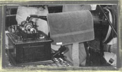

Music Samples
- McMichen’s Reel - A Skillet Lickers tune played by Russ and Barb Childers at the 2001 Breakin’ Up Winter Festival in Lebanon TN. and recorded by on vintage cylinder recording equipment by Martin Fisher. Russ, fiddle; Barb, banjo uke

-
John Brown’s Dream - Another historic tune played by Russ Childers, Gayle Brown, and Susan Eison at the 2002 Breakin’ Up Winter Festival in Lebanon TN. and recorded on vinatage cylinder recording equipment by Martin Fisher. Russ, banjo; Gayle, guitar; and Susan, bass.
-
Run Mountain - Run Mountain - Key of G. Warren, lead vocal; Judy, Barb, Russ, harmonies. Don’t blame us. J. E. Mainer and his Mountaineers made us do it, but Tim Wilson’s version still inspires those of us who remember Company Comin’s premier fiddler. When in doubt, sing louder.